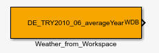
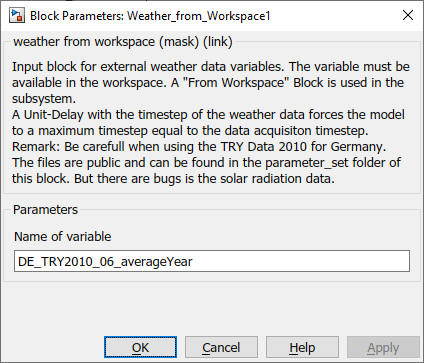

Weather_from_Workspace
Path: carnot/Weather
Purpose
Input block for
weather data from workspace.
Description
This block corresponds to the simulink block "From Workspace". You can
read in weather data from external files, like TRY (Test Reference Years) The data files have to be in a Matlab readable form, i.e. in
the first column the time has to appear. To bring Test Reference Years in the
Weather data format of CARNOT
different import filters can be
used.
See
utility functions.
Some data records are available
in carnot\public\data. See chapter
2.6 Weather Data Records
for details. Be carefull when using the TRY2010 data of the DWD.
If you are not intend to make operation on data before you use it in the model, prefer using Weather_Datafile.
Output
- WDB : Weather Data Bus
Parameters and Dialog Box

Characteristics
Direct Feedthrough
No
Sample time specify
-1
Vectorized
No